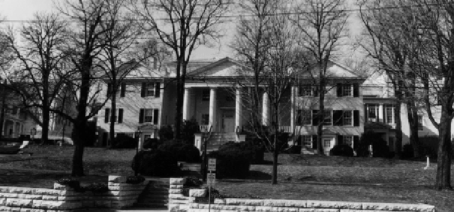

Mary Baldwin College Main Building
Staunton, Virginia

-
Constructed: 1844 (wings added in 1853)
-
Original Use: Augusta Female Seminary
-
Ownership History:
-
Number of Stories: 2
-
Architectural Style: Greek Revival
-
Exterior Features: Brick construction with gabled roof.
Three-bay portico over porch. Exterior decorated with Greek Doric
columns and pediment, a cast iron balcony, and molded
doors.
-
Interior Features: Doorways have architrave
trim.